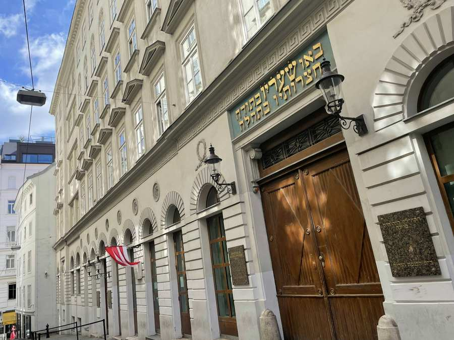
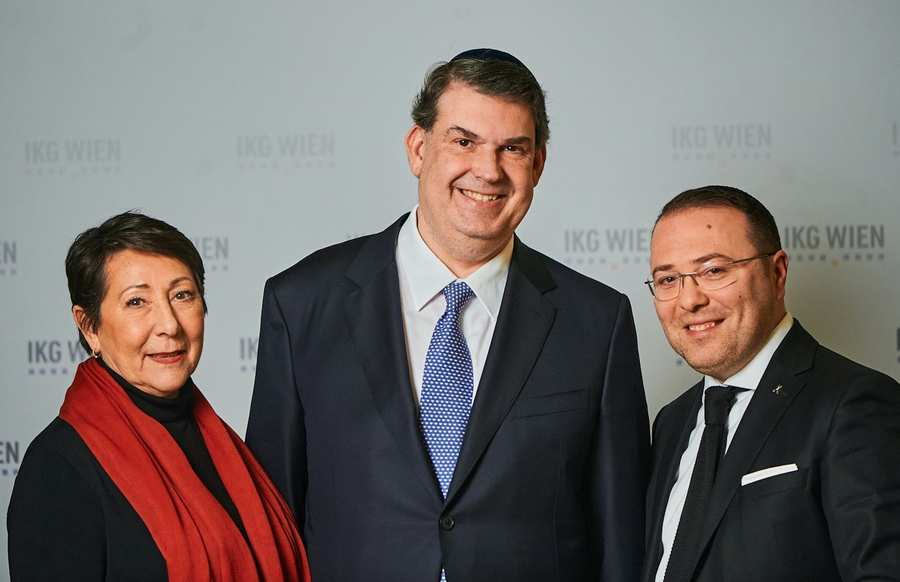

Nach der Wahl des Vorstands im vergangenen November standen dabei die Wahl des Präsidiums sowie der Mitglieder der zahlreichen Kommissionen im Mittelpunkt. Die in der Sitzung behandelten Themen waren:
-
Wahl des Präsidenten sowie der beiden
Vizepräsidentin und des Vizepräsidenten der IKG Wien
-
Wahl der Mitglieder der ständigen Kommissionen sowie diverser
Beiräte und Vorstände von mit der Kultusgemeinde verbundenen Vereinen,
Stiftungen und Gesellschaften
-
Generalversammlung von ESRA
-
Verkauf eines Grundstücks in Golling/NÖ
Oskar Deutsch zum IKG-Präsidenten wiedergewählt
Oskar Deutsch (Atid) wurde Mittwoch Abend erneut zum Präsidenten der IKG Wien gewählt. Seine Kür erfolgte mit 22 von 23 Stimmen (95,7 Prozent). Claudia Prutscher (Atid) übernimmt erneut das Amt der Vizepräsidentin (23 von 23 Stimmen). Erstmals zum Vizepräsidenten gewählt wurde Michael Galibov (VBJ, 22 von 23 Stimmen). Der Verein bucharischer Juden gehört anders als in der vergangenen Legislaturperiode nun der breiten Koalition von Fraktionen an, die die Gemeinde in den kommenden Jahren gemeinsam führen. Neben dem VBJ (sieben Mandate) sind hier jetzt Atid (acht Sitze), Kehille (vier Mandate), der Verein georgischer Juden (zwei Mandate), der Bund sozialdemokratischer Juden – Avoda (ein Mandat) sowie Khal Israel (ein Sitz) vertreten. Diese Fraktionen stellen 23 der insgesamt 24 Mitglieder des Kultusvorstands. Die einzige Oppositionspartei ist damit in dieser Periode Chaj (ein Mandat).
Es sei „eine riesige Ehre, Präsident dieser Gemeinde zu sein“, betonte Oskar Deutsch nach seiner neuerlichen Wahl zum IKG-Präsidenten. In Richtung der anwesenden Kultusräte meinte er, „was an diesen Tischen repräsentiert wird, ist das jüdische Wien. Es ist völlig egal, von wo wir kommen und von wo wir abstammen, es gilt Gutes zu tun.“ Im Vergleich mit vielen anderen europäischen jüdischen Gemeinden habe Wien „eine unglaubliche Infrastruktur“. Diese gelte es nun zu erhalten und abzusichern. Der Errichtung neuer Einrichtungen erteilte Deutsch eine Absage. Als Herausforderungen der nächsten Zeit benannte der IKG-Präsident die allgemeinen Teuerungen aber auch die Fortsetzung der Betreuung von Geflüchteten aus der Ukraine. Hier habe die Wiener Gemeinde sich 2022 ebenso vorbildlich engagiert wie zuvor in der gesundheitlichen Versorgung der Gemeindemitglieder in der Covid-Krise.

Claudia Prutscher bedankte sich für das neuerliche Vertrauen des Kultusvorstands, Michael Galibov für den Vertrauensvorschuss. Er erinnerte zudem an seinen Großvater Grigori Galibov (1930-2020). Der aus Taschkent stammende Arzt war Begründer des VBJ. Ihm sei die jüdische Gemeinde stets wichtig gewesen, so der Enkel.
Darauf hin erfolgte die Wahl der Mitglieder der ständigen Kommissionen sowie diverser Beiräte und Vorstände von mit der Kultusgemeinde verbundenen Vereinen, Stiftungen und Gesellschaften
Rund 200 Positionen in den diversen Kommissionen sowie Beiräten und Vorständen von mit der IKG verbundenen Vereinen, Stiftungen und Gesellschaften werden vom Kultusrat besetzt. Wie auch die Mandatsausübung im Kultusvorstand handelt es sich dabei um ehrenamtliche Tätigkeiten. Der Kultuskommission steht nun Elie Natanov (VBJ) vor, den Vorsitz in der Finanzkommission übt erneut Elie Rosen (Atid) aus. Claudia Prutscher leitet sowohl die Sozial- als auch die Kulturkommission, Natalie Neubauer (Atid) die Bildungskommission, Yaakov Uston (VBJ) jene für Immobilien. Betty Kricheli (Atid) steht erneut an der Spitze der Kommission für Jugend und Sport, Peter Munk (Avoda) leitet die Kontrollkommission, Oskar Deutsch jene für Fundraising. Chaj bemühte sich erneut um den Vorsitz in der Kontrollkommission, der von der Fraktion nominierte Thomas Stern erhielt allerdings nur zwei Stimmen. Hier finden Sie die aktuelle Zusammensetzung aller Kommissionen und Beiräte.
Generalversammlung von ESRA
Bei der Generalversammlung von ESRA und ESRA plus verabschiedete sich Jasmin Freyer (Atid) als Obfrau des Vereins ESRA und übergab diese Funktion an Dwora Stein (Avoda). Stein war schon bisher im Vorstand von ESRA, dem psychosozialen Zentrum der IKG, vertreten. In ihrer Bilanz hob Freyer, die seit 2018 Obfrau war, die Erhöhung des ESRA-Budgets um 50 Prozent hervor. Jasmin Freyer bedankt sich bei Präsident Oskar Deutsch für das Vertrauen und die großartige Unterstützung, sowie bei den 2 Generalsekretären. Die nun rund 75 Mitarbeiter:innen seien „ein phantastisches Team“ welches fast rund um die Uhr für die Gemeinde tätig ist.
Verkauf eines Grundstücks in Golling/NÖ
Einstimmig beschlossen wurde vom Kultusvorstand der Verkauf eines Grundstücks in Golling (Niederösterreich). Ursprünglich als landwirtschaftliche Fläche gewidmet, kann das 3.929 Quadratmeter große Areal nach einer Umwidmung nun bebaut werden. Da es zentrumsnah gelegen ist, war die Gemeinde an einem Erwerb mit dem Ziel der Errichtung sozialer Wohnbauten interessiert, berichtete der Generalsekretär für kaufmännische Angelegenheiten, Klaus Hoffmann. Der ursprünglich angebotene Preis von 35 Euro pro m2 habe auf nunmehr 78 Euro pro m2 hinaufverhandelt werden können. Mit dem Beschluss kann das Grundstück nun um rund 306.000 Euro verkauft werden.
Gewählte Mitglieder der Kommissionen aus der konstituierenden Sitzung des Kultusvorstands vom 11.01.2023.
Zusätzlich zu den gewählten Mitgliedern werden weitere Personen als Extrani nominiert, um aktiv bei der Arbeit der Kommissionen mitzuwirken.
| Präsidium | Präsident |
Oskar Deutsch |
| Vizepräsidentin | Claudia Prutscher | |
| Vizepräsident | Michael Galibov | |
| Kultuskommission | Vorsitz | Elie Natanow |
| stv. Vorsitz | Daniel Müller | |
| Mitglieder | Yaacov Frenkel Michael Grünberger Jossi Koren Beatrice Kricheli Maurizi Berger David Gov Ari |
|
| Kultur | Vorsitz | Claudia Prutscher |
| stv. Vorsitz | Arkadi Moullaev | |
| Mitglieder | Robert Sperling Edith Bauer Ronaldo Böhmer Jossi Koren Milli Segal Daniela Mautner-Markhof |
|
| Finanzen & Personal | Vorsitz | Elie Rosen |
| stv. Vorsitz | Arik Alaev | |
| Mitglieder | Eduard Pomeranz Gertrude Deborah Stein Daniel Müller Dezoni Dawaraschwili Maurizi Berger Josef Sarikov |
|
| Soziales | Vorsitz | Claudia Prutscher |
| stv. Vorsitz | Josef Sarikov | |
| Mitglieder | Marie-Therese Reisenauer Noah Adam Scheer Aron Liska Yaacov Frenkel Rina Kaikov Jossi Koren |
|
| Bildung | Vorsitz | Natalie Neubauer |
| stv. Vorsitz | Michael Galibov | |
| Mitglieder | Luka Girardi Aron Liska Ella Laura Anna Shklarek Dina Margules-Rappaport Reuven Rennert Dezoni Dawaraschwili |
|
| Immobilien | Vorsitz | Yaakov Uston |
| stv. Vorsitz | Georg Muzicant | |
| Mitglieder | Sadia Alperovits Maurizi Berger Dezoni Dawaraschwili Aron Liska Daniel Fuchs Daniel Gallner |
|
| Jugend & Sport | Vorsitz | Beatrice Kricheli |
| stv. Vorsitz | David Babacsayv | |
| Mitglieder | Albert Stern Jasmin Freyer David Wohlmuth Eidel Malovicki Luka Girardi David Dawaraschwili |
|
| Kontrollkommission | Vorsitz | Peter Munk |
| stv. Vorsitz | Jossi Koren | |
| Mitglieder | Thomas Stern Yaacov Frenkel Deborah Kratz-Lieber Arie Megre Gawriel Karschigijew Michael Grünberger |
|
| Fundraising | Vorsitz | Oskar Deutsch |
| stv. Vorsitz | Miriam Brownstone | |
| Mitglieder | Angela Zilberman Ronaldo Böhmer Beatrice Kricheli Dezoni Dawaraschwili Jasmin Freyer René Wachtel |
|
| Kultusbeitragsbemessung | Vorsitz | Michael Galibov |
| stv. Vorsitz | Erich Nuler | |
| Mitglieder | Yaacov Frenkel Josef Sarikov Dezoni Dawaraschwili Elie Rosen Claudia Prutscher Ariel Papa Noah Scheer Yakov Uston Peter Munk Rene Wachtel |
|
| MZ-Beirat | Vorsitz | Judith Adler |
| stv. Vorsitz | Ronaldo Böhmer | |
| Mitglieder | Yaacov Frenkel Peter Munk Arlette Leupold-Löwenthal Josef Sarikov Friederike Stern-Heller Dezoni Dawaraschwili |
|
| JFS-Beirat (Friedhöfe) | Vorsitz | Elie Rosen |
| Mitglieder | Maurizi Berger Josiw Juschwaew Wolfgang Wieshaider |
|
| MKA-Beirat (Eruv) | Vorsitz |
Maurizi Berger |
| Mitglieder | Sami Kern Nechemja Deutsch |
|
| JMV-Beirat | Vorsitz | Erich Nuler |
| Mitglieder | Noah Scheer Michael Galibov Gertrude Stein Reuven Rennert |
|
| Tmicha | Obmann | Oskar Deutsch |
| stv. Obmann I | Dezoni Dawaraschwili | |
| stv. Obmann II | Isabella Martens | |
| Beirats-Mitglieder | Angela Zilberman Oberrabbiner (ex officio) Yaacov Frenkel Beatrice Kricheli Daniel Müller Daniela Haraszti Reuven Rennert |
|
| Rechnungsprüfer | Judith Adler Jasmin Freyer |
|
| ZPC-Schulverein | Drei Delegierte | Natalie Neubauer Dezoni Dawaraschwili Michael Galibov |
| Frauen & Familie | Vizepräsident | Berta Pixner |
| stv. Vorsitz | Ella Shklarek | |
| Mitglieder | Rina Kaikov Angela Zilberman Elena Dawaraschwili Maria Haas Daphne Roth Judith Rabfogel-Scheer |
|
| Bundesverband | Vizepräsident | Dezoni Dawaraschwili |
| Vorstand | Beatrice Kricheli Yaacov Frenkel Michael Galibov Claudia Prutscher Jasmin Freyer Josef Sarikov |
|
| IRG | Drei Delegierte | Oskar Deutsch Dezoni Dawaraschwili Erich Nuler |
| Ombudsleute- Bestellungskomm |
ATID | Claudia Prutscher |
| VBJ | Jacob Uston | |
| Kehile | Edi Pomeranz | |
| VGJ | Dezoni Dawarahwili | |
| Chaj | Thomas Stern | |
| Bund | Peter Munk | |
| Khal | Ari Papa | |
| Schiedsgericht | Alexander Steiner Wolfgang Wieshaider Georg Teichman Amner Kalantarov Maurizi Berger Ariel Papa |
|
| Statutenkommission | Vorsitz | Maurizi Berger |
| stv. Vorsitz | Wolfgang Wieshaider | |
| Mitglieder | Gawriel Karschigijew Noah Scheer Thomas Stern Albert Stern Yaacov Frenkel Dezoni Dawaraschwili |
|
| Zuwanderung, Gewinnung neuer Gemeindemitglieder & Integration |
Vorsitz | Yaacov Frenkel |
| stv. Vorsitz | Maxim Slutski | |
| Mitglieder | Angela Zilberman Oskar Deutsch René Wachtel Albert Stern Dezoni Dawaraschwili David Gov Ari |
|
| ESRA & ESRA-plus |
Vorsitz | Gertrude Deborah Stein |
| stv. Vorsitzende I | Ella Shklarek | |
| stv. Vorsitzende II | Simone Hollinsky | |
| Vorstand | Beatrice Kricheli Josef Sarikov Jossi Koren Deborah Kratz-Lieber |
|
| Rechnungsprüfer | Peter Munk Judith Adler |
|
| JBBZ | Vorsitz | Dezoni Dawaraschwili |
| stv. Vorsitz | Jasmin Freyer | |
| Mitglieder | Marie-Therese Reisenauer Luka Girardi Ariel Abramov Rina Kaikov |
|
| Rechnungsprüfer | Judith Adler Peter Munk |
Mitglieder des Kultusvorstands
Per 1. April 2025 besteht der Kultusvorstand aus folgenden Mitgliedern:
Alaev Arik
Brownstone Miriam
Dawaraschwili Dezoni
Deutsch Oskar
Frenkel Yaacov
Freyer Jasmin
Galibov Michael
Girardi Luka
Grünberger Michael
Kaikov Rina
Koren Jossi
Kricheli Beatrice
Mandel Mordechai
Müller Daniel
Natanow Elie
Neubauer Natalie
Nuler Erich
Pomeranz Eduard
Prutscher Claudia
Sarikov Josef
Stein Deborah
Uston Yakov
Wachtel René
Zilberman Angela